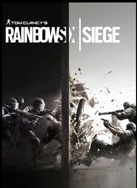

Meine Interessen liegen bei Hockey, Schlagzeug, Videospiele. Am meisten Spiele ich, Rainbow six siege, The Forest, Minecraft, CSGO, Microsoft-
Flight Simulator und Fortnite.
Vor allem aber programmiere ich sehr gerne etwas und versuche etwas kreatives daraus zu machen. Wie zum Beispiel diese Website. Eine andere sehr große Interesse war an einem Discord server mitzuhelfen, der Server heißt "Cloaksplus" und ist dafür
bekannt kostenlose Minecraft Capes an jeden zu geben der Minecraft Java besitzt "Cloaksplus".

Rainbow six:
Meiner Meinung nach ein sehr gutes Spiel, jedoch finde ich gab es zu viele Veränderungen an den Designs, Interface, was mir
am Ende nicht mehr gefallen hat.
The Forest:
The Forest ist ein sehr lustiges und aufregendes Spiel, am meisten macht es mit Freunden Spaß. In dem Spiel geht es um ein Flugzeugabsturz den man überlebt hat, doch beim wieder aufwachen sieht man wie sein Kind entführt wird. Die Hauptaufgabe des Spiels ist es ein Kinder wieder zu bekommen, jedoch stolpert man auf viele Gefahren und Abenteuer, man beforscht Höhlen und eine einsame Insel, mit vielen Tieren und Natur.